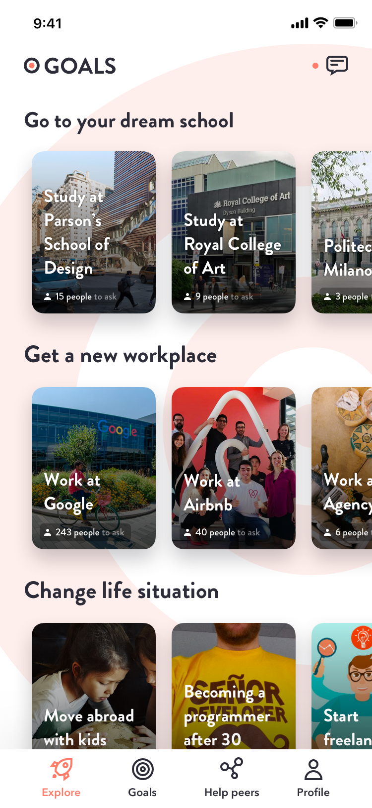

Talent Product Labs
Talent Product Labs is a product arm of Talent Venture Group - a cluster of companies within the sphere of HR, recruitment and professional development. We ship products fast and test them on the market.
As a full-time interim designer, I support companies within the group in their design work as well as initiating our own projects. I move fast between projects, teams and work methods to accelerate innovation.
-
Wireframing
-
Invision
-
User research
-
Sketch
Design